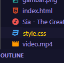
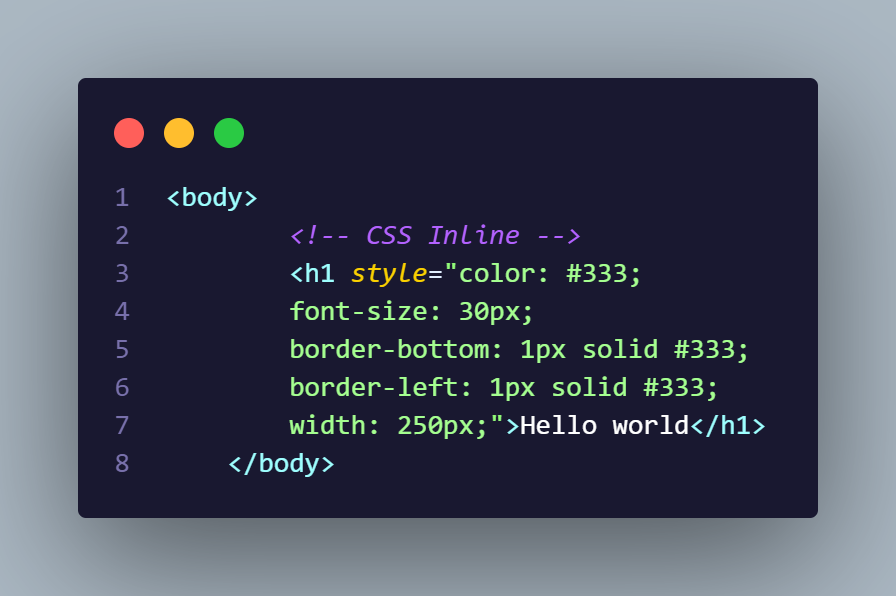
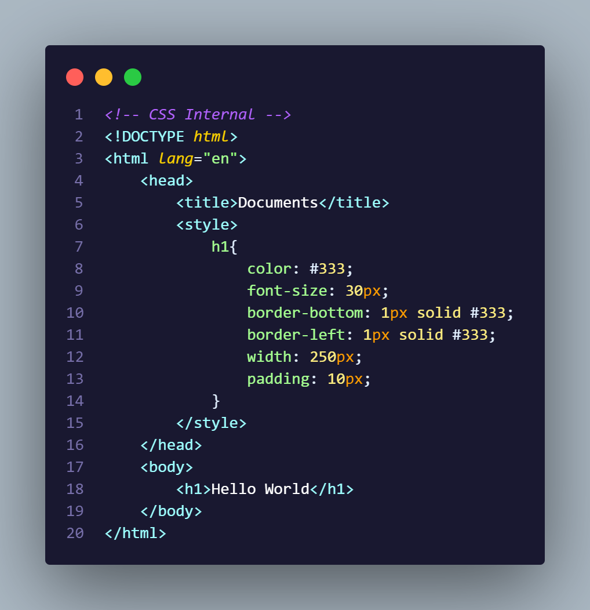
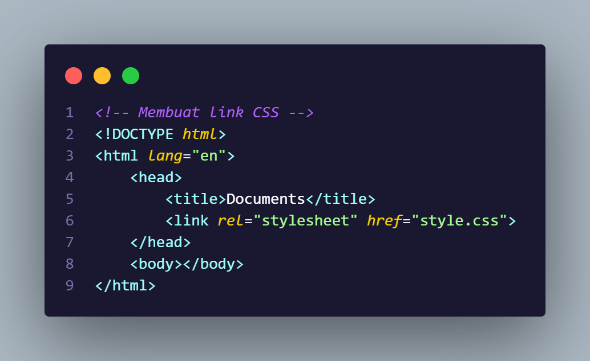
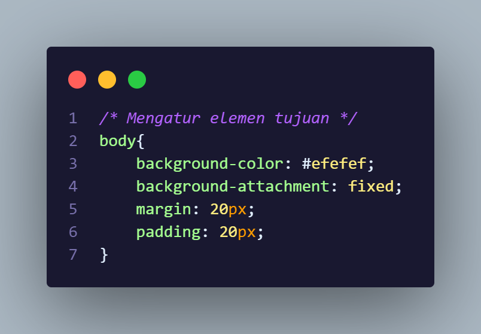

CSS singkatan dari Cascading Style Sheets. Ini adalah bahasa pemrograman yang digunakan untuk mendesain tampilan halaman web. Dengan CSS, Anda dapat mengontrol tata letak, warna, font, ukuran, dan berbagai aspek tampilan visual dari elemen-elemen HTML pada halaman web. CSS memisahkan tata letak dan konten dari halaman web, memungkinkan pengembang untuk menciptakan desain yang konsisten dan mudah dikelola di seluruh situs web.
Sejarah CSS dimulai pada awal 1990-an ketika Tim Berners-Lee, pencipta World Wide Web, mulai memikirkan cara untuk memisahkan konten dari tata letak pada halaman web. Pada tahun 1994, Håkon Wium Lie dan Bert Bos memperkenalkan proposal pertama untuk CSS dalam sebuah makalah yang diajukan ke World Wide Web Consortium (W3C), badan standar yang bertanggung jawab atas spesifikasi web.
Kemudian, pada tahun 1996, W3C merilis versi pertama dari spesifikasi CSS, yang dikenal sebagai CSS level 1. CSS Level 1 memberikan kemampuan dasar untuk mengontrol tampilan elemen-elemen HTML, seperti warna, font, dan tata letak.
Pada tahun-tahun berikutnya, W3C terus mengembangkan spesifikasi CSS dengan merilis CSS Level 2 pada tahun 1998. CSS Level 2 menyempurnakan banyak fitur dan menambahkan beberapa yang baru, seperti dukungan untuk posisi elemen, tata letak tabel yang lebih canggih, dan media queries.
Kemudian, CSS Level 3 mulai dikembangkan, dan meskipun tidak pernah sepenuhnya selesai, spesifikasi ini secara bertahap diperbarui dan diperluas oleh W3C seiring waktu. CSS Level 3 menghadirkan banyak fitur baru, termasuk efek transisi, animasi, transformasi, dan banyak lagi.
Sejak itu, CSS terus berkembang dengan penambahan fitur-fitur baru dan perbaikan pada spesifikasi. Perkembangan ini termasuk penyempurnaan pada CSS Grid dan Flexbox, yang memberikan lebih banyak kemampuan dalam mengatur tata letak halaman web secara responsif dan fleksibel.
Selain itu, CSS sekarang telah menjadi standar de facto dalam desain web modern, dan menjadi salah satu komponen kunci dalam pengembangan web saat ini.
Jadi! Intinya CSS adalah bahasa pemrograman untuk mendesain dan merapihkan website, Sebelum kita mulai jangan lupa untuk membuat file baru dengan "namafile", tambahkan tanda titik (.) lalu tambahkan "css" disamping tanda titik yang hasilnya ada di gambar bawah ini.
Oke yang pertama, ini adalah contoh gambar css inline, pada intinya css inline adalah css yang mengatur didalam satu elemen html saja atau mengatur elemen satu-persatu, oh ya jangan lupa! ini adalah css yang masih mengatur didalam file html ya.
Yang kedua!, ada yang namanya css internal, dia ini pada intinya css yang mengatur di dalam satu file html, css internal juga membutuhkan elemen html yang bernama style yang dimunculkan di dalam elemen head untuk mengaktifkan stylenya, contohnya ada di gambar yang ada di bawah.
Dan yang terakhir!, adalah css external yaitu css yang membutuhkan file css seperti contoh yang tadi dari awal, cara mengaturnya kita membutuhkan link css terlebih dahulu, lalu kita bisa mengaturnya dari file cssnya, kita bisa lihat dari gambar dibawah ini.
 Gimana nih? paham ga?, menurut kalian mendingan pake inline, internal, apa external? hehe saran saya sih pake external aja biar kalo buat elemen udah muncul style-stylenya, setelah kalian mempelajari ini kalian juga harus tahu style-style css yang kalian bisa lihat di Coding List